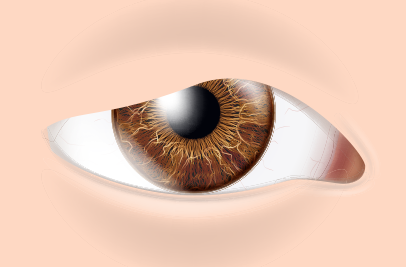
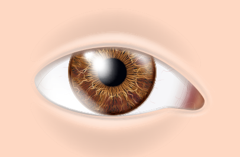
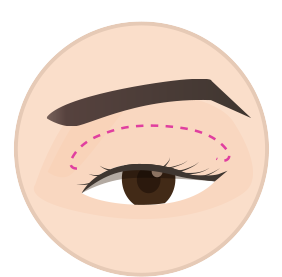
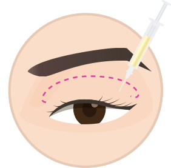
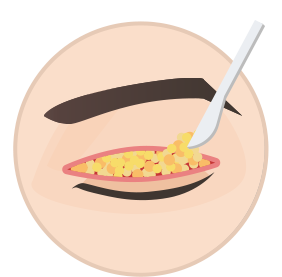
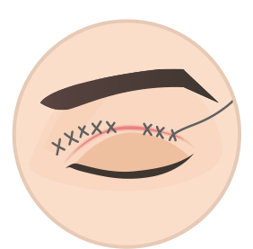
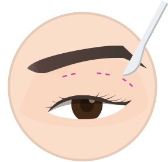
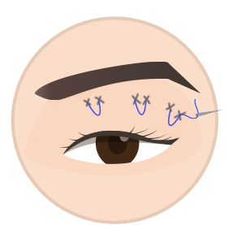

안성형
에스안과
시력교정
노안/백내장
망막/황반변성
안구건조증
녹내장
소아안과
안성형
예약/상담
눈꺼풀처짐
안검하수
눈꺼풀처짐
눈물흘림
안검내반
눈꺼풀처짐
안과전문의가 눈의 기능요소를
고려해
치료합니다.
눈꺼풀처짐
이란?
기능적 불편함을 초래하는 질환
정확한 원인파악과 치료가 중요합니다.
눈꺼풀처짐은 나이가 들면서 노화로 인해
눈꺼풀이처지는 것을 말합니다.
눈꺼풀처짐은 나이가 들면서 발생하는 질환
으로 눈꺼풀의
피부가
늘어지면서 눈동자의 일부를 덮는 현상
입니다. 눈동자의 일부가
가려져 졸린 인상을 주고 시야기 일부가 가려지기 때문에 안구에도
안좋은 영향을 줍니다.
눈꺼풀처짐
상안검성형술
상안검 성형술은
처진 윗눈꺼풀을 절제하는 수술로 눈꺼풀 처짐 현상을 개선하고 쌍꺼풀과 시원한 눈매를 만드는 수술
입니다.
쌍꺼풀을 원하지 않을 때에는 얇게 라인을 잡아 수술이 진행되며 눈꺼풀 지방이 많은 경우에는 제거가 진행되기도 합니다.

눈꺼풀처짐

정상적인눈
상안검성형술 수술 종류
01. 절개 수술 방법

STEP01
수술 전 도안을 그립니다.

STEP02
수술 전 국소마취를 합니다.

STEP03
절개 라인을 따라 절개 후
지방 조직을제거합니다.

STEP04
봉합하여 마무리를 합니다.
수술 방법
피부를 절개한 후 처진 근육과 지방을
절제한 후 눈꺼풀을 들어 올려 근육과
피부를 연걸하는 수술 방법입니다.
수술 장점
매몰법 보다 붓기가 오래가지만 풀릴
가능성이 적으며 눈꺼풀 처짐과 안검
하수를 동시에 해결이 가능하며 또렷
한 쌍꺼풀 만들 수 있습니다.
수술 과정
수술은 국소마취를 통해 진행되며
수술 시간은 한시간 정도 소요되며
당일 퇴원 후 다음날 일상 생활이
가능합니다.
02. 매몰 수술 방법
STEP01
수술 전 도안을 그립니다.
STEP02
수술 전 국소마취를 합니다.

STEP03
수술 전 부분을
1mm~2mm절개합니다.

STEP04
부분 절개 한 곳을 봉합합니다
수술 방법
매몰 수술 방법은 작은 구멍을 여러개
만들어 그 사이로 실을 통과시켜 눈꺼풀
근막이 유착되도록 하는 방법입니다.
수술 장점
짧은 회복 기간과 붓기가 빨리 빠지는
장점이 있으며 흉터가 거의 없으며
자연스러운 쌍꺼풀을 만들 수 있습니다.
수술 과정
수술은 국소마취를 통해 진행되며
수술 시간은 한시간 정도 소요되며
당일 퇴원을 하며 다음날 일상생활
이 가능합니다.
안과에서 하는 미용적 눈수술
괜찮을까요?
안과성형은 단순히 미용상 목적이 아니기 때문에
안구의 기능과 상태를 정확히 파악
하고 치료 할 수 있는
안과전문의에게 치료를 받아야 기능적 문제와 외관상 문제를 안전하고 확실하게 치료
할 수 있습니다.
눈 구조를 정확하게
파악하여
개인 맞춤
수술
로
체계적인수술
미용안성형 안과전문의
풍부한 임상 경험
을
바탕으로한
최적의수술
안구의 기능을 고려한
정확한 수술로
부작용을
최소화
한
안전한 수술